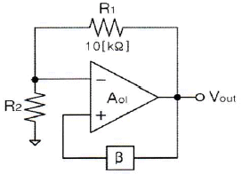
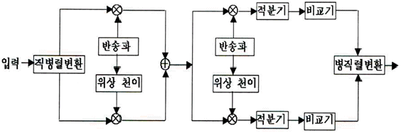
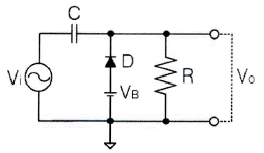
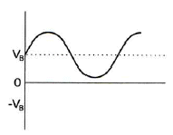
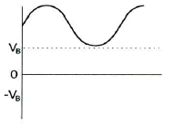
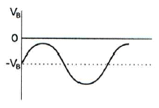
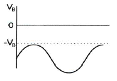
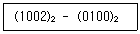
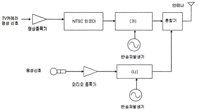
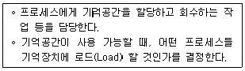

방송통신산업기사 (2016-10-08 기출문제)
1과목: 디지털 전자회로
1. P형과 N형 사이에 샌드위치 형태의 특별한 반도체층인 진성층을 갖고 있으며, 이 층이 다이오드의 커패시턴스를 감소시켜 일반적인 다이오드보다 고주파에서 동작하며, RF 스위칭용으로 사용되는 다이오드는?
- 핀(PIN) 다이오드
- 건(Gunn) 다이오드
- 임팻(IMPATT) 다이오드
- 터널(Tunnel) 다이오드
(정답률: 89%)

2. 다음 중 정전압 안정화회로의 구성요소 중 하나인 제어부 역할에 대한 설명으로 옳은 것은?
- 제너다이오드 또는 건전지로 기준전압을 얻는다.
- 출력을 제어하고 변동분을 상쇄하여 출력전압을 항상 일정하게 한다.
- 기준전압과 검출된 출력전압의 차를 제어신호로 얻는다.
- 검출된 신호를 증폭하여 변동을 상쇄할 수 있는 극성의 신호를 제어소자에 가한다.
(정답률: 84%)
3. 이미터접지 트랜지스터 증폭기회로에서 입력신호와 출력신호의 전압 위상차는 얼마인가?
- 90°의 위상차가 있다.
- 180°의 위상차가 있다.
- 270°의 위상차가 있다.
- 360°의 위상차가 있다.
(정답률: 89%)
4. 이미터 전류를 1[mA] 변화시켰더니 컬렉터 전류의 변화는 0.96[mA]였다. 이 트랜지스터 β는 얼마인가?
- 0.96
- 1.04
- 24
- 48
(정답률: 72%)
5. 다음 중 적분기에 사용되는 콘덴서의 절연저항이 커야하는 이유로 옳은 것은?
- 연산의 정밀도를 높이기 위하여
- 연산이 끝나면 전하를 방전시키기 위하여
- 단락시켜도 잔류전압이 방전 안되기 때문에
- 회로 동작이 복잡해지기 때문에
(정답률: 83%)
6. 다음 중 이상적인 연산증폭기(OP-AMP)가 갖추어야 할 조건으로 틀린 것은?
- 입력 임피던스가 무한대
- 대역폭이 무한대
- 전압이득이 무한대
- 입력 오프셋(Offset) 전압이 무한대
(정답률: 81%)
7. 다음 그림은 윈 브리지 발진기의 블록도이다. 발진하기 위한 저항 R2의 값은?

- 5[kΩ]
- 10[kΩ]
- 20[kΩ]
- 30[kΩ]
(정답률: 74%)
8. 다음 중 클랩(Clapp) 발진기의 특징이 아닌 것은?
- 콜피츠 발진기를 변형한 것이다.
- 발진주파수가 안정하다.
- 발진주파수 범위가 작다.
- 발진출력이 크다.
(정답률: 81%)
9. 다음 중 아날로그 진폭 변조 방식의 종류가 아닌 것은?
- DSB-LC(DSB-TC)
- DSB-SC
- FM
- SSB
(정답률: 78%)
10. 다음 펄스 변조 방식 중 연속레벨 변조방식과 관련이 없는 것은?
- PAM
- PWM
- PCM
- PPM
(정답률: 64%)
11. 다음의 회로 구성도로 동작하는 변복조 방식은?

- 2-PSK
- QPSK
- 8-PSK
- OQPSK
(정답률: 88%)
12. 다음 중 위상 고정 루프(PLL : Phase Locked Loop)를 구성하는 내부 회로가 아닌 것은?
- 전압 제어 발진기
- 발진 제어 전압 발생기
- 위상 비교기
- 저역 통과 필터
(정답률: 64%)
13. 다음 회로에 정현파가 입력될 때 출력 파형으로 맞는 것은? (단, VB는 정현파의 진폭보다 크며, 다이오드는 이상적인 다이오드라고 가정한다.)





(정답률: 78%)
14. 다음 2진수의 뺄셈 결과로 맞는 것은?

- (0011)2
- (0100)2
- (0101)2
- (0110)2
(정답률: 69%)
15. 4진수 231.3을 7진수로 변환하면?
- 45.5151
- 45.5252
- 63.5151
- 63.5252
(정답률: 61%)
16. 다음 중 부울 대수의 법칙이 아닌 것은?
- 항등법칙
- 동일법칙
- 복원법칙
- 감산법칙
(정답률: 57%)
17. 논리식 A(A+B+C)를 간략화한 것으로 옳은 것은?
- 1
- 0
- A+B+C
- A
(정답률: 82%)
18. 8비트의 링카운터를 설계할 때 최소로 필요한 플립플롭의 수는?
- 4
- 8
- 16
- 32
(정답률: 71%)
19. 다음 중 레지스터의 주 기능에 해당하는 것은?
- 스위칭 기능
- 데이터의 일시 저장
- 펄스 발생기
- 회로 동기장치
(정답률: 88%)
20. 다음 중 DRAM의 구조에서 존재하지 않는 동작은 무엇인가?
- 쓰기 모드
- 읽기 모드
- 래치(Latch)
- 재충전
(정답률: 76%)
2과목: 방송통신 기기
21. 다음 중 ATSC 전송방식에 대한 설명으로 틀린 것은?
- ATSC 전송시스템은 NTSC 주파수 대역을 기본으로 하고 있다.
- 송수신기 구현이 용이하고, 이동수신 측면에서 우수하다.
- 디지털 신호를 심볼화하여 VSB 변조를 하며, 지상파 방송의 경우 8-VSB 방식을 사용한다.
- 8-VSB 방식은 6[MHz] 대역폭에 약 19.39[Mbps]의 데이터를 전송할 수 있다.
(정답률: 93%)
22. 다음 그림은 NTSC TV 신호의 송신 과정이다. (가), (나)에 들어가야 할 기기로 옳은 것은?

- (가) : AM 변조기 (나) : FM 변조기
- (가) : FM 변조기 (나) : AM 변조기
- (가) : PM 변조기 (나) : AM 변조기
- (가) : 전력증폭기 (나) : 혼합기
(정답률: 92%)
23. 다음 중 디지털 변조방식이 아닌 것은?
- 진폭 편이 키잉(ASK)
- 주파수 편이 키잉(FSK)
- 직교 진폭 변조(QAM)
- 진폭 변조(AM)
(정답률: 88%)
24. 두 개의 신호에 대한 전력비가 10[dB]의 차이가 났을 때 P2/P1의 비율 값은 얼마인가?
- 10
- 3
- 6
- 2
(정답률: 66%)
25. 다음 중 국내 FM 방송 송신 안테나에 관한 설명으로 틀린 것은?
- 88[MHz]~108[MHz]의 주파수 대역을 사용한다.
- 서비스 지역의 지형이나 대상에 따라 원편파나 직선편파를 사용한다.
- 소전력용으로는 야기안테나를 사용한다.
- 주로 무지향성의 다이폴 안테나를 사용한다.
(정답률: 84%)
26. 다음 중 FM 변조 방식으로 적당하지 않은 것은?
- 가변 용량 다이오드 방식
- 포스터 실리 방식
- 가변 인덕턴스 방식
- 암스트롱 방식
(정답률: 54%)
27. 다음 중 라디오 음원으로 사용했을 때 가장 좋은 음질을 사용할 수 있는 코딩은?
- WAV
- MP3
- MUSICAM
- MP2
(정답률: 93%)
28. TV 신호 크기는 IRE 단위로 표시한다. 수평동기신호는 몇 [IRE]이고, 크기는 몇 [Vpp]인가?
- -40[IRE], 0.286[Vpp]
- -40[IRE], 0.333[Vpp]
- -50[IRE], 0.667[Vpp]
- -50[IRE], 0.714[Vpp]
(정답률: 74%)
29. 비디오 스위처에서 영상의 색상 차이를 이용하여 움직이는 피사체를 다른 화면에 합성할 때 사용하는 이펙트 키는?
- 크로마 키
- 루미넌스 키
- 리니어 키
- 매트 키
(정답률: 100%)
30. 30[kHz]의 대역폭을 갖는 신호 전송시 PCM에서 요구되는 최소의 표본화 주파수는?
- 30[kHz]
- 40[kHz]
- 60[kHz]
- 80[kHz]
(정답률: 83%)
31. 다음 전송케이블 중 가장 큰 대역폭을 갖는 것은?
- 평형대케이블
- 동축케이블
- 광케이블
- UTP케이블
(정답률: 84%)
32. 특성 임피던스 Zo=50[Ω]의 선로에 부하 저항으로 75[Ω]을 연결한 경우 정재파비(VSWR) 값은 얼마인가?
- 0.2
- 0.4
- 1
- 1.5
(정답률: 83%)
33. 다음 중 동기신호에 관한 설명으로 틀린 것은?
- 영상카메라를 주사할 때와 동일한 주사를 수상기에서도 할 수 있도록 한다.
- 동기신호가 맞지 않으면 화면은 정상이나 음성에 문제가 생긴다.
- 동기신호에는 수평동기신호와 수직동기신호가 있다.
- 동기신호는 영상신호가 나타나지 않는 귀선기간에 삽입한다.
(정답률: 89%)
34. 웨이브폼모니터에서 아날로그 합성 영상신호의 진폭은 동기신호를 포함하여 몇 [IRE]의 범위를 갖는가?
- 100[IRE]
- 140[IRE]
- 200[IRE]
- 240[IRE]
(정답률: 66%)
35. 다음 중 위성통신의 특징이 아닌 것은?
- 광대역 통신회선을 구성할 수 있다.
- 재난시 비상망 구축이 어렵다.
- 비교적 높은 신뢰성의 통신을 할 수 있다.
- 통신회선 구성에 신속성과 유연성이 있다.
(정답률: 84%)
36. 다음 중 정지 방송위성과 관제 제어국의 특징으로 맞지 않는 것은?
- 약 36,000[km]의 먼 거리이다.
- 각도와 거리 변화율이 매우 작다.
- 궤도 결정은 위성에 탑재된 중계기를 사용하여 거리와 거리 변화율을 측정하여 얻는다.
- 위성의 궤도는 시간차만을 이용하여 결정된다.
(정답률: 92%)
37. 다음 중 웨이브폼 모니터로 측정하기에 가장 용이한 것은?
- 색도신호의 위상
- 색도신호의 지연왜곡
- 수평동기펄스
- TV신호의 주파수
(정답률: 48%)
38. NTSC TV 색 신호의 위상을 측정하는 장비는?
- 벡터스코프(Vector Scope)
- 웨이브폼 모니터(Waveform Monitor)
- 스펙트럼 분석기(Spectrum Analyzer)
- TV 신호 측정기(TV Signal Meter)
(정답률: 84%)
39. 다음 중 송신기에서 부하변동에 따른 주파수의 변동을 방지하기 위하여 A급 증폭기를 사용하는 회로는?
- 발진 증폭부
- 완충 증폭부
- 주파수 체배기
- 전력 증폭기
(정답률: 75%)
40. 송신기의 디지털 변조방식 중 2비트로 구성된 4개의 신호를 90도 위상차를 갖도록 할당하여 변조하는 방식은?
- ASK
- FSK
- PCM
- QPSK
(정답률: 91%)
3과목: 방송미디어 개론
41. 200[W]를 dBm로 환산한 레벨 값은?
- 33[dBm]
- 53[dBm]
- 200[0]
- 300[dBm]
(정답률: 67%)
42. ″음향 5.1채널″에 포함되는 6개의 채널에서 다른 5개 채널과 구분되는 ″.1″ 채널은 다음 중 무엇인가?
- 좌측
- 좌측 서라운드
- 중앙
- 저대역효과 채널
(정답률: 90%)
43. 아날로그방송 신호에서 수평톱니파의 주파수가 15,750[Hz]이며, 귀선시간이 18[%]일 때 1회 유효주사선 시간은 약 얼마인가?
- 3[μs]
- 16[μs]
- 52[μs]
- 63[μs]
(정답률: 80%)
44. NTSC TV 신호에서 Baseband 신호란 어떤 신호인가?
- 프레임 신호
- 필드신호
- 싱크신호
- 컴포지트신호
(정답률: 67%)
45. 다음 중 화상을 구성하는 최소의 단위는?
- Pixel
- Frame
- Resolution
- Cut
(정답률: 85%)
46. 최고 주파수 20,000[Hz] 오디오를 10초간 저장하기 위해서 필요한 데이터량은? [단, 샘플링 주파수는 나이퀴스트 이론에 의한 최소주파수를 사용하며 A/D(아날로그/디지털) 변환기는 16비트이다.]
- 200[kbyte]
- 400[kbyte]
- 800[kbyte]
- 2[Mbyte]
(정답률: 80%)
47. 다음 중 집적 회로에 의해서 구성된 촬상 소자는?
- 플럼비콘
- CCD
- 세티콘
- 아이코너 스코프
(정답률: 93%)
48. 다음 중 미디어가 잘못 짝지어진 것은?
- 신문 - 인쇄미디어
- 전화 - 음향미디어
- TV - 멀티미디어
- Telegram - 영상미디어
(정답률: 96%)
49. 다음 중 전통적인 인쇄 신문에서 전산사식의 글자모양에 덧붙여 그래픽, 사진 등을 함께 편집ㆍ처리하여 출판하는 자동화된 신문제작시스템을 말하는 것은?
- CTS
- CAD
- ATM
- CAM
(정답률: 78%)
50. 다음 중 조명의 기능으로 가장 부적절한 것은?
- 적정 조도를 만든다.
- 명암 대비를 만든다.
- 주파수 특성을 좋게 한다.
- 입체감과 질감을 만든다.
(정답률: 93%)
51. 인터넷방송 기술에서 클라이언트와 서버가 일대일로 연결하는 방식으로, 클라이언트가 직접 미디어 서버에 접속하여 방송을 보는 전송방식은?
- 푸시 기술
- 스트리밍 기술
- 유니캐스트 기술
- 멀티캐스트 기술
(정답률: 77%)
52. 인터넷에서 E-mail 이용시 메일 서버에서 메일을 받기 위한 프로토콜은?
- POP3
- HTTP
- NNTP
- SMTP
(정답률: 76%)
53. 다음 중 지상파방송과 비교하여 위성방송의 특징이 아닌 것은?
- 지상파 방송에 비해 낙도와 산간지역 등의 서비스에 유리하다.
- 방송 및 통신 채널의 설치와 변경이 용이하다.
- 10[GHz]이상 주파수를 사용하는 경우 강우에 강하다.
- 전국에 동일한 방송서비스를 제공할 수 있다.
(정답률: 77%)
54. 11.766[GHz] 주파수의 위성방송 신호를 수신할 경우 LNB의 수신 입력 주파수는? [단, LNB의 L.O(Local Oscillator) 주파수는 10.75[GHz]이다.]
- 22.516[GHz]
- 12.732[GHz]
- 7.9466[GHz]
- 1.016[GHz]
(정답률: 87%)
55. 우리나라의 디지털 지상파방송(DTV) 시스템에서 HDTV 방송인 경우 비디오신호 부호화 방식은?
- MPEG-2, MP@ML
- MPEG-2, MP@HL
- MPEG-4, MP@ML
- MPEG-4, MP@HL
(정답률: 68%)
56. 다음 중 전송매체에 따른 디지털 방송의 분류에 해당되지 않는 것은?
- 지상파 디지털 TV
- 디지털 위성 방송
- 종합디지털 방송
- 디지털 CATV
(정답률: 77%)
57. 압축된 화상 데이터를 재생하는 신호 표현방식이 아닌 것은?
- 계층재생방식
- 원격재생방식
- 점진재생방식
- 순차재생방식
(정답률: 74%)
58. 디지털 컴포넌트 영상신호(ITU-R Rec.709, HDTV급)의 표본화주파수(휘도신호기준)는?
- 71.25[MHz]
- 72.25[MHz]
- 73.25[MHz]
- 74.25[MHz]
(정답률: 48%)
59. 다음 중 모르스 부호처럼 발생률이 높은 데이터에는 짧은 부호를 할당하고, 발생률이 낮은 데이터에는 긴 부호를 할당하여 압축율을 높이는 것을 무엇이라 하는가?
- 가변장 부호화
- 이산 코사인 변환
- 리드 솔로몬 부호화
- 영상신호 부호화
(정답률: 87%)
60. 지향 특성에 의한 위성 안테나 분류에 있어서 원점을 중심으로 모든 방향으로 동일한 전계 패턴을 갖는 안테나는?
- 단일 지향성
- 방향성(Omni-Directional)
- 등 방향성(Isortopic)
- 양 방향성
(정답률: 87%)
4과목: 전자계산기 일반 및 방송설비기준
61. 다음 중 컴퓨터의 기본 구조에 대한 설명으로 틀린 것은?
- CPU는 컴퓨터의 특성과 성능을 결정한다.
- 주기억장치는 레지스터보다 액세스 속도가 빠르다.
- 입, 출력 장치는 별도의 인터페이스 회로가 필요하다.
- 보조 저장 장치는 영구 저장 능력을 가지고 있다.
(정답률: 70%)
62. 산술 및 논리 연산의 결과를 일시적으로 기억하는 레지스터는?
- Instruction 레지스터
- Status Flag 레지스터
- Accumulator 레지스터
- Address 레지스터
(정답률: 76%)
63. 8비트로 표현되는 부호와 절대치(Signed Magnitude)의 방식에서 -50을 한 비트 우측으로 산술적 시프트 시키면 어떻게 표시되는가?
- 01011001
- 10110010
- 10011001
- 1 1000 0100 1011
(정답률: 53%)
64. 컴퓨터에서 음수를 표현하는 방법이 아닌 것은?
- Signed Magnitude 표현법
- Signed Code 표현법
- Signed-1's Complement 표현법
- Signed-2's Complement 표현법
(정답률: 60%)
65. 다음 보기는 운영체제의 어떤 자원 관리 기능에 대한 설명인가?

- 디스크 관리 기능
- 입출력 장치 관리 기능
- 프로세스 관리 기능
- 기억장치 관리 기능
(정답률: 78%)
66. 다음 중 운영체제가 관리하는 리소스의 종류가 아닌 것은?
- 주기억장치
- 그래픽 카드
- 프로세서 스케줄
- BIOS
(정답률: 72%)
67. 김씨는 인터넷에서 소프트웨어를 다운 받아 사용하는데, 30일이 되는 날 ‘프로그램을 실행시키려면 금액을 지불하고 사용하라’는 메시지를 받았다. 김씨가 사용한 소프트웨어는 무엇인가?
- 데모 프로그램
- 상용 프로그램
- 프리웨어 프로그램
- 셰어웨어 프로그램
(정답률: 81%)
68. 다음 중 고급언어로 쓰여진 프로그램을 컴퓨터에서 수행될 수 있는 저급의 기계어로 번역하는 것은?
- C 언어
- 포트란
- 컴파일러
- 링커
(정답률: 83%)
69. 다음 중 프로그램카운터의 기능에 대한 설명으로 옳은 것은?
- 다음에 수행할 명령의 주소를 기억하고 있다.
- 데이터가 기억된 위치를 지시한다.
- 기억하거나 읽은 데이터를 보관한다.
- 수행 중인 명령을 기억한다.
(정답률: 85%)
70. CPU가 실행하여야 할 명령어의 수가 75개인 경우 명령어 구분을 위한 명령코드(Op-Code)는 최소한 몇 비트가 필요한가?
- 5비트
- 6비트
- 7비트
- 8비트
(정답률: 79%)
71. 방송되는 사항의 종류ㆍ내용ㆍ분량ㆍ시각ㆍ배열을 정하는 것을 무엇이라 하는가?
- 방송
- 방송프로그램
- 방송편성
- 방송사업
(정답률: 85%)
72. 방송법에 규정된 방송사업의 종류는?
- 공중방송사업, 종합유선방송사업, 위성방송사업, 자가방송사업
- 지상파방송사업, 종합유선방송사업, 위성방송사업, 방송채널사용사업
- 초단파방송사업, 라디오방송사업, TV방송사업, CATV방송사업
- 공중파방송사업, 유선방송사업, 위성방송사업, 방송전송망사업
(정답률: 75%)
73. 다음 중 방송사업의 허가ㆍ승인ㆍ등록 등에 관한 사항으로 올바른 것은?
- 지상파 방송사업 - 승인
- 방송채널 사용 사업 - 허가
- 위성 방송사업 - 등록
- 전송망 사업 - 등록
(정답률: 76%)
74. 우리나라 지상파 디지털방송(DTV)용 무선설비에서 휘도신호(Y) 블록 4개와 색차신호(Cb, Cr) 블록 각 한 개씩으로 구성된 영상신호 형식은?
- 4:2:0
- 4:2:1
- 2:1:4
- 2:1:1
(정답률: 82%)
75. 다음 중 방송 공동수신 안테나 시설에서 수신안테나 설치방법으로 옳지 않은 것은?
- 지상파방송, 위성방송 신호를 수신할 수 있도록 안테나를 구성하여 설치하여야 한다.
- 둘 이상의 건축물이 하나의 단지를 구성하고 있는 경우에는 한 조의 수신안테나를 설치하여 공동으로 사용할 수 있다.
- 수신안테나는 벼락으로부터 보호될 수 있도록 설치하되, 피뢰시설과 30[cm] 이상의 거리를 두어야 한다.
- 수신안테나를 지지하는 구조물은 풍(風)하중을 견딜 수 있도록 견고하게 설치하여야 한다.
(정답률: 80%)
76. 다음 중 증폭기의 기준에 가장 적합한 것은?
- 등화기로 출력신호 레벨을 등화할 수 있을 것
- 텔레비전 방송신호를 균일하게 증폭할 수 있을 것
- 감쇠기로 출력신호 레벨을 감쇠할 수 있을 것
- 공급되는 전원을 자동으로 차단할 수 있을 것
(정답률: 72%)
77. 중계유선방송 및 음악유선방송의 질적수준에 있어 누설전자파는 216[MHz] 초과인 경우에 몇 [dBμV/m] 이하를 만족해야 하는가? (단, 3[m] 거리에서 측정 시)
- 30
- 35
- 43
- 48
(정답률: 65%)
78. 입력신호 에너지를 간선에서 지선으로 불균등하게 분리시키는 장치를 분기기라 하는데 종단 저항값은?
- 600[Ω]
- 75[Ω]
- 100[Ω]
- 10[Ω]
(정답률: 76%)
79. 맨호 또는 핸드홀의 설치기준에서 맨홀 또는 핸드홀 간의 거리는?
- 244[m] 이내
- 246[m] 이내
- 264[m] 이내
- 268[m] 이내
(정답률: 72%)
80. 방송법에서 규정하는 2년 이하의 징역 또는 3천만원 이하의 벌금에 해당하는 벌칙 사항은?
- 법령 규정에 위반하여 방송편성에 관하여 규제나 간섭을 한 자
- 방송편성 규약을 제정하지 않은 자
- 법규정에 의한 시정명령을 위반한 자
- 대통령령을 위반하여 협찬고지를 한 자
(정답률: 72%)